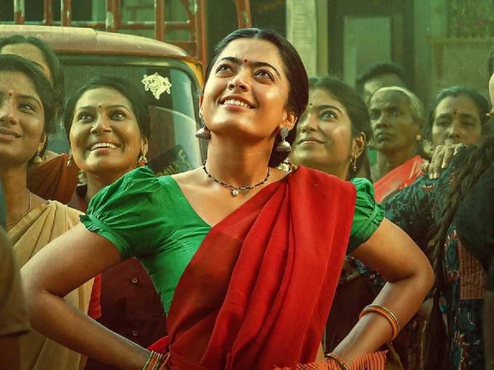

Pushpa: The Rise is a 2021 Indian Telugu-language action drama film written and directed by Sukumar, and produced by Mythri Movie Makers and Muttamsetty Media. The film stars Allu Arjun as Pushpa Raj, a coolie who rises in a syndicate that smuggles red sandalwood, a rare wood that grows only in the Seshachalam Hills of Andhra Pradesh. The ensemble supporting cast includes Fahadh Faasil (in his Telugu debut), Rashmika Mandanna, Dhananjaya, Jagadeesh Prathap Bandari, Ajay, Raj Tirandasu, Sunil, Rao Ramesh, Ajay Ghosh, Shatru, Shanmukh and Anasuya Bharadwaj. The film began production in December 2019 but was halted in March 2020 by the COVID-19 pandemic. Filming resumed in November 2020 and ended in November 2021, predominantly taking place at Ramoji Film City in Hyderabad and Maredumilli forest in Andhra Pradesh. Devi Sri Prasad composed the film's score and soundtrack while the cinematography and editing are performed by Miroslaw Kuba Brozek and Karthika Srinivas–Ruben respectively. Pushpa: The Rise was released on 17 December 2021. The film received generally mixed reviews from critics, who praised the performances, action choreography, cinematography, direction, dialogues, and soundtrack but criticised the runtime, screenplay and editing. The film was commercially successful, grossing over ₹360–373 crore at the worldwide box office. It became the highest-grossing Indian film of 2021, and ranks among the highest-grossing Telugu films of all time. In 2024 it was featured retrospectively at the 74th Berlinale. At the 69th National Film Awards, Pushpa: The Rise won two awards – Best Actor (Arjun) and Best Music Direction (Prasad). At the 67th Filmfare Awards South, it won seven awards meant for Telugu films, including Best Film, Best Director (Sukumar) and Best Actor (Arjun). It is the first installment in the Pushpa film series, and a sequel titled Pushpa 2: The Rule is scheduled for release on 6 December 2024. Plot In the late 1990s, labourer Pushpa Raj decides to smuggle red sandalwood with his friend Kesava. He moves up the ranks in smuggler Konda Reddy's group while evading DSP Govindappa. Konda's brother Jaali hates Pushpa for getting more attention from his elder brother. Konda's boss, Srinu, entrusts Konda to keep his contraband of tonnes of sandalwood safe from the Police Department, and Pushpa is assigned to the task by the Reddy brothers, so that if anything happens to it, they can blame him in front of Srinu. Jaali intentionally sabotages Pushpa so he'll get caught by the police, but Pushpa and Kesava use their quick thinking to avoid getting caught. Pushpa finds out Srinu is scamming his workers and tells Konda, but he refuses to go up against the powerful Srinu. Pushpa falls in love with Srivalli, a milk seller, and an engagement is arranged. During the ceremony, Pushpa's elder half-brother Mohan makes a scene, revealing Pushpa is illegitimate. In the ensuing scuffle, Pushpa's mother gets hurt, which motivates him to make his way up. He bypasses Srinu, and is able to get a higher profit for the wood that he agrees to split with Konda. Jaali discovers Srivalli's father is a mole for Govindappa; lusting after Srivalli, Jaali blackmails her to sleep with him to save her father. Srivalli tells Pushpa, who beats Jaali and leaves him paralysed. Jaali doesn't tell Konda who beat him, wanting to kill Pushpa himself, but Konda discovers the truth on his own. Konda attempts to kill Pushpa, but they're attacked by Srinu's men and brother-in-law, Mogileesu, who kills Konda Reddy. Pushpa rescues Konda's younger brother Jakka, rekindling their partnership, and murders Mogileesu. MLA Naidu arranges a truce between Pushpa and Srinu, but after discovering about the latter's scams, he appoints Pushpa to replace Srinu. As time goes by, Pushpa takes control of the entire syndicate.
In a new still from 'The Couple Song' (called 'Sooseki' in Telugu), Rashmika Mandanna as Srivalli is seen leaning onto her Pushpa, aka, Allu Arjun. While Arjun was dressed in a full-sleeved T-shirt and pants, Rashmika wore a striped top with pants and a dupatta draped as a saree.In a new still from 'The Couple Song' (called 'Sooseki' in Telugu), Rashmika Mandanna as Srivalli is seen leaning onto her Pushpa, aka, Allu Arjun. While Arjun was dressed in a full-sleeved T-shirt and pants, Rashmika wore a striped top with pants and a dupatta draped as a saree.In a new still from 'The Couple Song' (called 'Sooseki' in Telugu), Rashmika Mandanna as Srivalli is seen leaning onto her Pushpa, aka, Allu Arjun. While Arjun was dressed in a full-sleeved T-shirt and pants, Rashmika wore a striped top with pants and a dupatta draped as a saree.In a new still from 'The Couple Song' (called 'Sooseki' in Telugu), Rashmika Mandanna as Srivalli is seen leaning onto her Pushpa, aka, Allu Arjun. While Arjun was dressed in a full-sleeved T-shirt and pants, Rashmika wore a striped top with pants and a dupatta draped as a saree.In a new still from 'The Couple Song' (called 'Sooseki' in Telugu), Rashmika Mandanna as Srivalli is seen leaning onto her Pushpa, aka, Allu Arjun. While Arjun was dressed in a full-sleeved T-shirt and pants, Rashmika wore a striped top with pants and a dupatta draped as a saree.In a new still from 'The Couple Song' (called 'Sooseki' in Telugu), Rashmika Mandanna as Srivalli is seen leaning onto her Pushpa, aka, Allu Arjun. While Arjun was dressed in a full-sleeved T-shirt and pants, Rashmika wore a striped top with pants and a dupatta draped as a saree.In a new still from 'The Couple Song' (called 'Sooseki' in Telugu), Rashmika Mandanna as Srivalli is seen leaning onto her Pushpa, aka, Allu Arjun. While Arjun was dressed in a full-sleeved T-shirt and pants, Rashmika wore a striped top with pants and a dupatta draped as a saree.In a new still from 'The Couple Song' (called 'Sooseki' in Telugu), Rashmika Mandanna as Srivalli is seen leaning onto her Pushpa, aka, Allu Arjun. While Arjun was dressed in a full-sleeved T-shirt and pants, Rashmika wore a striped top with pants and a dupatta draped as a saree.vIn a new still from 'The Couple Song' (called 'Sooseki' in Telugu), Rashmika Mandanna as Srivalli is seen leaning onto her Pushpa, aka, Allu Arjun. While Arjun was dressed in a full-sleeved T-shirt and pants, Rashmika wore a striped top with pants and a dupatta draped as a saree.In a new still from 'The Couple Song' (called 'Sooseki' in Telugu), Rashmika Mandanna as Srivalli is seen leaning onto her Pushpa, aka, Allu Arjun. While Arjun was dressed in a full-sleeved T-shirt and pants, Rashmika wore a striped top with pants and a dupatta draped as a saree.In a new still from 'The Couple Song' (called 'Sooseki' in Telugu), Rashmika Mandanna as Srivalli is seen leaning onto her Pushpa, aka, Allu Arjun. While Arjun was dressed in a full-sleeved T-shirt and pants, Rashmika wore a striped top with pants and a dupatta draped as a saree.In a new still from 'The Couple Song' (called 'Sooseki' in Telugu), Rashmika Mandanna as Srivalli is seen leaning onto her Pushpa, aka, Allu Arjun. While Arjun was dressed in a full-sleeved T-shirt and pants, Rashmika wore a striped top with pants and a dupatta draped as a saree.In a new still from 'The Couple Song' (called 'Sooseki' in Telugu), Rashmika Mandanna as Srivalli is seen leaning onto her Pushpa, aka, Allu Arjun. While Arjun was dressed in a full-sleeved T-shirt and pants, Rashmika wore a striped top with pants and a dupatta draped as a saree.In a new still from 'The Couple Song' (called 'Sooseki' in Telugu), Rashmika Mandanna as Srivalli is seen leaning onto her Pushpa, aka, Allu Arjun. While Arjun was dressed in a full-sleeved T-shirt and pants, Rashmika wore a striped top with pants and a dupatta draped as a saree.In a new still from 'The Couple Song' (called 'Sooseki' in Telugu), Rashmika Mandanna as Srivalli is seen leaning onto her Pushpa, aka, Allu Arjun. While Arjun was dressed in a full-sleeved T-shirt and pants, Rashmika wore a striped top with pants and a dupatta draped as a saree.In a new still from 'The Couple Song' (called 'Sooseki' in Telugu), Rashmika Mandanna as Srivalli is seen leaning onto her Pushpa, aka, Allu Arjun. While Arjun was dressed in a full-sleeved T-shirt and pants, Rashmika wore a striped top with pants and a dupatta draped as a saree.While Arjun was dressed in a full-sleeved T-shirt and pants, Rashmika wore a striped top with pants and a dupatta draped as a saree.In a new still from 'The Couple Song' (called 'Sooseki' in Telugu), Rashmika Mandanna as Srivalli is seen leaning onto her Pushpa, aka, Allu Arjun. While Arjun was dressed in a full-sleeved T-shirt and pants, Rashmika wore a striped top with pants and a dupatta draped as a saree.In a new still from 'The Couple Song' (called 'Sooseki' in Telugu), Rashmika Mandanna as Srivalli is seen leaning onto her Pushpa, aka, Allu Arjun. While Arjun was dressed in a full-sleeved T-shirt and pants, Rashmika wore a striped top with pants and a dupatta draped as a saree.In a new still from 'The Couple Song' (called 'Sooseki' in Telugu), Rashmika Mandanna as Srivalli is seen leaning onto her Pushpa, aka, Allu Arjun. While Arjun was dressed in a full-sleeved T-shirt and pants, Rashmika wore a striped top with pants and a dupatta draped as a saree.In a new still from 'The Couple Song' (called 'Sooseki' in Telugu), Rashmika Mandanna as Srivalli is seen leaning onto her Pushpa, aka, Allu Arjun. While Arjun was dressed in a full-sleeved T-shirt and pants, Rashmika wore a striped top with pants and a dupatta draped as a saree.In a new still from 'The Couple Song' (called 'Sooseki' in Telugu), Rashmika Mandanna as Srivalli is seen leaning onto her Pushpa, aka, Allu Arjun. While Arjun was dressed in a full-sleeved T-shirt and pants, Rashmika wore a striped top with pants and a dupatta draped as a saree.In a new still from 'The Couple Song' (called 'Sooseki' in Telugu), Rashmika Mandanna as Srivalli is seen leaning onto her Pushpa, aka, Allu Arjun. While Arjun was dressed in a full-sleeved T-shirt and pants, Rashmika wore a striped top with pants and a dupatta draped as a saree.vIn a new still from 'The Couple Song' (called 'Sooseki' in Telugu), Rashmika Mandanna as Srivalli is seen leaning onto her Pushpa, aka, Allu Arjun. While Arjun was dressed in a full-sleeved T-shirt and pants, Rashmika wore a striped top with pants and a dupatta draped as a saree.In a new still from 'The Couple Song' (called 'Sooseki' in Telugu), Rashmika Mandanna as Srivalli is seen leaning onto her Pushpa, aka, Allu Arjun. While Arjun was dressed in a full-sleeved T-shirt and pants, Rashmika wore a striped top with pants and a dupatta draped as a saree.In a new still from 'The Couple Song' (called 'Sooseki' in Telugu), Rashmika Mandanna as Srivalli is seen leaning onto her PushpaWhile Arjun was dressed in a full-sleeved T-shirt and pants, Rashmika wore a striped top with pants and a dupatta draped as a saree.In a new still from 'The Couple Song' (called 'Sooseki' in Telugu), Rashmika Mandanna as Srivalli is seen leaning onto her Pushpa, aka, Allu Arjun. While Arjun was dressed in a full-sleeved T-shirt and pants, Rashmika wore a striped top with pants and a dupatta draped as a saree.In a new still from 'The Couple Song' (called 'Sooseki' in Telugu), Rashmika Mandanna as Srivalli is seen leaning onto her Pushpa, aka, Allu Arjun. While Arjun was dressed in a full-sleeved T-shirt and pants, Rashmika wore a striped top with pants and a dupatta draped as a saree.In a new still from 'The Couple Song' (called 'Sooseki' in Telugu), Rashmika Mandanna as Srivalli is seen leaning onto her Pushpa, aka, Allu Arjun. While Arjun was dressed in a full-sleeved T-shirt and pants, Rashmika wore a striped top with pants and a dupatta draped as a saree.vIn a new still from 'The Couple Song' (called 'Sooseki' in Telugu), Rashmika Mandanna as Srivalli is seen leaning onto her Pushpa, aka, Allu Arjun. While Arjun was dressed in a full-sleeved T-shirt and pants, Rashmika wore a striped top with pants and a dupatta draped as a saree.In a new still from 'The Couple Song' (called 'Sooseki' in Telugu), Rashmika Mandanna as Srivalli is seen leaning onto her Pushpa, aka, Allu Arjun.
Pushpa falls in love with Srivalli, a milk seller, and an engagement is arranged. During the ceremony, Pushpa's elder half-brother Mohan makes a scene, revealing Pushpa is illegitimate. In the ensuing scuffle, Pushpa's mother gets hurt, which motivates him to make his way up. He bypasses Srinu, and is able to get a higher profit for the wood that he agrees to split with Konda. Jaali discovers Srivalli's father is a mole for Govindappa; lusting after Srivalli, Jaali blackmails her to sleep with him to save her father. Srivalli tells Pushpa, who beats Jaali and leaves him paralysed. Jaali doesn't tell Konda who beat him, wanting to kill Pushpa himself, but Konda discovers the truth on his own. Konda attempts to kill Pushpa, but they're attacked by Srinu's men and brother-in-law, Mogileesu, who kills Konda Reddy. Pushpa rescues Konda's younger brother Jakka, rekindling their partnership, and murders Mogileesu. MLA Naidu arranges a truce between Pushpa and Srinu, but after discovering about the latter's scams, he appoints Pushpa to replace Srinu. As time goes by, Pushpa takes control of the entire syndicate.While Arjun was dressed in a full-sleeved T-shirt and pants, Rashmika wore a striped top with pants and a dupatta draped as a saree.In a new still from 'The Couple Song' (called 'Sooseki' in Telugu), Rashmika Mandanna as Srivalli is seen leaning onto her Pushpa, aka, Allu Arjun. While Arjun was dressed in a full-sleeved T-shirt and pants, Rashmika wore a striped top with pants and a dupatta draped as a saree.In a new still from 'The Couple Song' (called 'Sooseki' in Telugu), Rashmika Mandanna as Srivalli is seen leaning onto her Pushpa, aka, Allu Arjun. While Arjun was dressed in a full-sleeved T-shirt and pants, Rashmika wore a striped top with pants and a dupatta draped as a saree.In a new still from 'The Couple Song' (called 'Sooseki' in Telugu), Rashmika Mandanna as Srivalli is seen leaning onto her Pushpa, aka, Allu Arjun. While Arjun was dressed in a full-sleeved T-shirt and pants, Rashmika wore a striped top with pants and a dupatta draped as a saree.In a new still from 'The Couple Song' (called 'Sooseki' in Telugu), Rashmika Mandanna as Srivalli is seen leaning onto her Pushpa, aka, Allu Arjun. While Arjun was dressed in a full-sleeved T-shirt and pants, Rashmika wore a striped top with pants and a dupatta draped as a saree.In a new still from 'The Couple Song' (called 'Sooseki' in Telugu), Rashmika Mandanna as Srivalli is seen leaning onto her Pushpa, aka, Allu Arjun. While Arjun was dressed in a full-sleeved T-shirt and pants, RashmikaPushpa falls in love with Srivalli, a milk seller, and an engagement is arranged. During the ceremony, Pushpa's elder half-brother Mohan makes a scene, revealing Pushpa is illegitimate. In the ensuing scuffle, Pushpa's mother gets hurt, which motivates him to make his way up. He bypasses Srinu, and is able to get a higher profit for the wood that he agrees to split with Konda. Jaali discovers Srivalli's father is a mole for Govindappa; lusting after Srivalli, Jaali blackmails her to sleep with him to save her father. Srivalli tells Pushpa, who beats Jaali and leaves him paralysed. Jaali doesn't tell Konda who beat him, wanting to kill Pushpa himself, but Konda discovers the truth on his own. Konda attempts to kill Pushpa, but they're attacked by Srinu's men and brother-in-law, Mogileesu, who kills Konda Reddy. Pushpa rescues Konda's younger brother Jakka, rekindling their partnership, and murders Mogileesu. MLA Naidu arranges a truce between Pushpa and Srinu, but after discovering about the latter's scams, he appoints Pushpa to replace Srinu. As time goes by, Pushpa takes control of the entire syndicate.While Arjun was dressed in a full-sleeved T-shirt and pants, Rashmika wore a striped top with pants and a dupatta draped as a saree.In a new still from 'The Couple Song' (called 'Sooseki' in Telugu), Rashmika Mandanna as Srivalli is seen leaning onto her Pushpa, aka, Allu Arjun. While Arjun was dressed in a full-sleeved T-shirt and pants, Rashmika wore a striped top with pants and a dupatta draped as a saree.In a new still from 'The Couple Song' (called 'Sooseki' in Telugu), Rashmika Mandanna as Srivalli is seen leaning onto her Pushpa, aka, Allu Arjun. While Arjun was dressed in a full-sleeved T-shirt and pants, Rashmika wore a striped top with pants and a dupatta draped as a saree.In a new still from 'The Couple Song' (called 'Sooseki' in Telugu), Rashmika Mandanna as Srivalli is seen leaning onto her Pushpa, aka, Allu Arjun. While Arjun was dressed in a full-sleeved T-shirt and pants, Rashmika wore a striped top with pants and a dupatta draped as a saree.In a new still from 'The Couple Song' (called 'Sooseki' in Telugu), Rashmika Mandanna as Srivalli is seen leaning onto her Pushpa, aka, Allu Arjun. While Arjun was dressed in a full-sleeved T-shirt and pants, Rashmika wore a striped top with pants and a dupatta draped as a saree.In a new still from 'The Couple Song' (called 'Sooseki' in Telugu), Rashmika Mandanna as Srivalli is seen leaning onto her Pushpa, aka, Allu Arjun. While Arjun was dressed in a full-sleeved T-shirt and pants, Rashmika
Best Director (Sukumar) and Best Actor (Arjun). It is the first installment in the Pushpa film series, and a sequel titled Pushpa 2: The Rule is scheduled for release on 6 December 2024. Plot In the late 1990s, labourer Pushpa Raj decides to smuggle red sandalwood with his friend Kesava. He moves up the ranks in smuggler Konda Reddy's group while evading DSP Govindappa. Konda's brother Jaali hates Pushpa for getting more attention from his elder brother. Konda's boss, Srinu, entrusts Konda to keep his contraband of tonnes of sandalwood safe from the Police Department, and Pushpa is assigned to the task by the Reddy brothers, so that if anything happens to it, they can blame him in front of Srinu. Jaali intentionally sabotages Pushpa so he'll get caught by the police, but Pushpa and Kesava use their quick thinking to avoid getting caught. Pushpa finds out Srinu is scamming his workers and tells Konda, but he refuses to go up against the powerful Srinu. Pushpa falls in love with Srivalli, a milk seller, and an engagement is arranged. During the ceremony, Pushpa's elder half-brother Mohan makes a scene, revealing Pushpa is illegitimate. In the ensuing scuffle, Pushpa's mother gets hurt, which motivates him to make his way up. He bypasses Srinu, and is able to get a higher profit for the wood that he agrees to split with Konda. Jaali discovers Srivalli's father is a mole for Govindappa; lusting after Srivalli, Jaali blackmails her to sleep with him to save her father. Srivalli tells Pushpa, who beats Jaali and leaves him paralysed. Jaali doesn't tell Konda who beat him, wanting to kill Pushpa himself, but Konda discovers the truth on his own. Konda attempts to kill Pushpa, but they're attacked by Srinu's men and brother-in-law, Mogileesu, who kills Konda Reddy. Pushpa rescues Konda's younger brother Jakka, rekindling their partnership, and murders Mogileesu. MLA Naidu arranges a truce between Pushpa and Srinu, but after discovering about the latter's scams, he appoints Pushpa to replace Srinu. As time goes by, Pushpa takes control of the entire syndicate.While Arjun was dressed in a full-sleeved T-shirt and pants, Rashmika wore a striped top with pants and a dupatta draped as a saree.In a new still from 'The Couple Song' (called 'Sooseki' in Telugu), Rashmika Mandanna as Srivalli is seen leaning onto her Pushpa, aka, Allu Arjun. While Arjun was dressed in a full-sleeved T-shirt and pants, Rashmika wore a striped top with pants and a dupatta draped as a saree.In a new still from 'The Couple Song' (called 'Sooseki' in Telugu), Rashmika Mandanna as Srivalli is seen leaning onto her Pushpa, aka, Allu Arjun. While Arjun was dressed in a full-sleeved T-shirt and pants, Rashmika wore a striped top with pants and a dupatta draped as a saree.In a new still from 'The Couple Song' (called 'Sooseki' in Telugu), Rashmika Mandanna as Srivalli is seen leaning onto her Pushpa, aka, Allu Arjun. Rashmika wore a striped top with pants and a dupatta draped as a saree.In a new still from 'The Couple Song' (called 'Sooseki' in Telugu), Rashmika Mandanna as Srivalli is seen leaning onto her Pushpa, aka, Allu Arjun. While Arjun was dressed in a full-sleeved T-shirt and pants, Rashmika wore a striped top with pants and a dupatta draped as a saree.vIn a new still from 'The Couple Song' (called 'Sooseki' in Telugu), Rashmika Mandanna as Srivalli is seen leaning onto her Pushpa, aka, Allu Arjun. While Arjun was dressed in a full-sleeved T-shirt and pants, Rashmika wore a striped top with pants and a dupatta draped as a saree.In a new still from 'The Couple Song' (called 'Sooseki' in Telugu), Rashmika Mandanna as Srivalli is seen leaning onto her Pushpa, aka, Allu Arjun. While Arjun was dressed in a full-sleeved T-shirt and pants, Rashmika wore a striped top with pants and a dupatta draped as a saree.In a new still from 'The Couple Song' (called 'Sooseki' in Telugu), Rashmika Mandanna as Srivalli is seen leaning onto her Pushpa, aka, Allu Arjun. While Arjun was dressed in a full-sleeved T-shirt and pants, Rashmika wore a striped top with pants and a dupatta draped as a saree.In a new still from 'The Couple Song' (called 'Sooseki' in Telugu), Rashmika Mandanna as Srivalli is seen leaning onto her Pushpa, aka, Allu Arjun. While Arjun was dressed in a full-sleeved T-shirt and pants, Rashmika wore a striped top with pants and a dupatta draped as a sareePushpa falls in love with Srivalli, a milk seller, and an engagement is arranged. During the ceremony, Pushpa's elder half-brother Mohan makes a scene, revealing Pushpa is illegitimate. In the ensuing scuffle, Pushpa's mother gets hurt, which motivates him to make his way up. He bypasses Srinu, and is able to get a higher profit for the wood that he agrees to split with Konda. Jaali discovers Srivalli's father is a mole for Govindappa; lusting after Srivalli, Jaali blackmails her to sleep with him to save her father. Srivalli tells Pushpa, who beats Jaali and leaves him paralysed. Jaali doesn't tell Konda who beat him, wanting to kill Pushpa himself, but Konda discovers the truth on his own. Konda attempts to kill Pushpa, but they're attacked by Srinu's men and brother-in-law, Mogileesu, who kills Konda Reddy. Pushpa rescues Konda's younger brother Jakka, rekindling their partnership, and murders Mogileesu. MLA Naidu arranges a truce between Pushpa and Srinu, but after discovering about the latter's scams, he appoints Pushpa to replace Srinu. As time goes by, Pushpa takes control of the entire syndicate.While Arjun was dressed in a full-sleeved T-shirt and pants, Rashmika wore a striped top with pants and a dupatta draped as a saree.In a new still from 'The Couple Song' (called 'Sooseki' in Telugu), Rashmika Mandanna as Srivalli is seen leaning onto her Pushpa, aka, Allu Arjun. While Arjun was dressed in a full-sleeved T-shirt and pants, Rashmika wore a striped top with pants and a dupatta draped as a saree.In a new still from 'The Couple Song' (called 'Sooseki' in Telugu), Rashmika Mandanna as Srivalli is seen leaning onto her Pushpa, aka, Allu Arjun. While Arjun was dressed in a full-sleeved T-shirt and pants, Rashmika wore a striped top with pants and a dupatta draped as a saree.In a new still from 'The Couple Song' (called 'Sooseki' in Telugu), Rashmika Mandanna as Srivalli is seen leaning onto her Pushpa, aka, Allu Arjun. While Arjun was dressed in a full-sleeved T-shirt and pants, Rashmika wore a striped top with pants and a dupatta draped as a saree.In a new still from 'The Couple Song' (called 'Sooseki' in Telugu), Rashmika Mandanna as Srivalli is seen leaning onto her Pushpa, aka, Allu Arjun. While Arjun was dressed in a full-sleeved T-shirt and pants, Rashmika wore a striped top with pants and a dupatta draped as a saree.In a new still from 'The Couple Song' (called 'Sooseki' in Telugu), Rashmika Mandanna as Srivalli is seen leaning onto her Pushpa, aka, Allu Arjun. While Arjun was dressed in a full-sleeved T-shirt and pants, Rashmika


The ensemble supporting cast includes Fahadh Faasil (in his Telugu debut), Rashmika Mandanna, Dhananjaya, Jagadeesh Prathap Bandari, Ajay, Raj Tirandasu, Sunil, Rao Ramesh, Ajay Ghosh, Shatru, Shanmukh and Anasuya Bharadwaj. Rashmika wore a striped top with pants and a dupatta draped as a saree.vIn a new still from 'The Couple Song' (called 'Sooseki' in Telugu), Rashmika Mandanna as Srivalli is seen leaning onto her Pushpa, aka, Allu Arjun. While Arjun was dressed in a full-sleeved T-shirt and pants, Rashmika wore a striped top with pants and a dupatta draped as a saree.In a new still from 'The Couple Song' (called 'Sooseki' in Telugu), Rashmika Mandanna as Srivalli is seen leaning onto her Pushpa, aka, Allu Arjun. While Arjun was dressed in a full-sleeved T-shirt and pants, Rashmika wore a striped top with pants and a dupatta draped as a saree.In a new still from 'The Couple Song' (called 'Sooseki' in Telugu), Rashmika Mandanna as Srivalli is seen leaning onto her Pushpa, aka, Allu Arjun. While Arjun was dressed in a full-sleeved T-shirt and pants, Rashmika wore a striped top with pants and a dupatta draped as a saree.In a new still from 'The Couple Song' (called 'Sooseki' in Telugu), Rashmika Mandanna as Srivalli is seen leaning onto her Pushpa, aka, Allu Arjun. While Arjun was dressed in a full-sleeved T-shirt and pants, Rashmika wore a striped top with pants and a dupatta draped as a sareePushpa falls in love with Srivalli, a milk seller, and an engagement is arranged. During the ceremony, Pushpa's elder half-brother Mohan makes a scene, revealing Pushpa is illegitimate. In the ensuing scuffle, Pushpa's mother gets hurt, which motivates him to make his way up. He bypasses Srinu, and is able to get a higher profit for the wood that he agrees to split with Konda. Jaali discovers Srivalli's father is a mole for Govindappa; lusting after Srivalli, Jaali blackmails her to sleep with him to save her father. Srivalli tells Pushpa, who beats Jaali and leaves him paralysed. Jaali doesn't tell Konda who beat him, wanting to kill Pushpa himself, but Konda discovers the truth on his own. Konda attempts to kill Pushpa, but they're attacked by Srinu's men and brother-in-law, Mogileesu, who kills Konda Reddy. Pushpa rescues Konda's younger brother Jakka, rekindling their partnership, and murders Mogileesu. MLA Naidu arranges a truce between Pushpa and Srinu, but after discovering about the latter's scams, he appoints Pushpa to replace Srinu. As time goes by, Pushpa takes control of the entire syndicateThe film began production in December 2019 but was halted in March 2020 by the COVID-19 pandemic. Filming resumed in November 2020 and ended in November 2021, predominantly taking place at Ramoji Film City in Hyderabad and Maredumilli forest in Andhra Pradesh. Devi Sri Prasad composed the film's score and soundtrack while the cinematography and editing are performed by Miroslaw Kuba Brozek and Karthika Srinivas–Ruben respectively. Pushpa: The Rise was released on 17 December 2021. The film received generally mixed reviews from critics, who praised the performances, action choreography, cinematography, direction, dialogues, and soundtrack but criticised the runtime, screenplay and editing. The film was commercially successful, grossing over ₹360–373 crore at the worldwide box office. It became the highest-grossing Indian film of 2021, and ranks among the highest-grossing Telugu films of all time. In 2024 it was featured retrospectively at the 74th Berlinale. At the 69th National Film Awards, Pushpa: The Rise won two awards – Best Actor (Arjun) and Best Music Direction (Prasad). At the 67th Filmfare Awards South, it won seven awards meant for Telugu films, including Best Film, Best Director (Sukumar) and Best Actor (Arjun). It is the first installment in the Pushpa film series, and a sequel titled Pushpa 2: The Rule is scheduled for release on 6 December 2024. Plot In the late 1990s, labourer Pushpa Raj decides to smuggle red sandalwood with his friend Kesava. He moves up the ranks in smuggler Konda Reddy's group while evading DSP Govindappa. Konda's brother Jaali hates Pushpa for getting more attention from his elder brother. Konda's boss, Srinu, entrusts Konda to keep his contraband of tonnes of sandalwood safe from the Police Department, and Pushpa is assigned to the task by the Reddy brothers